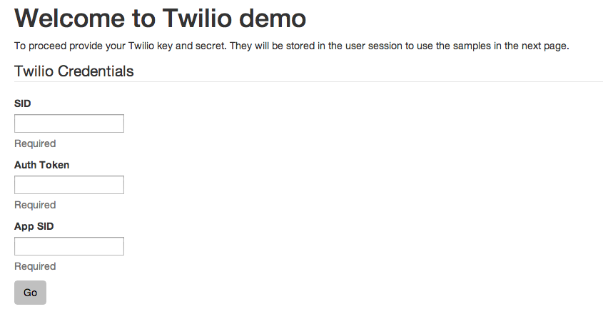
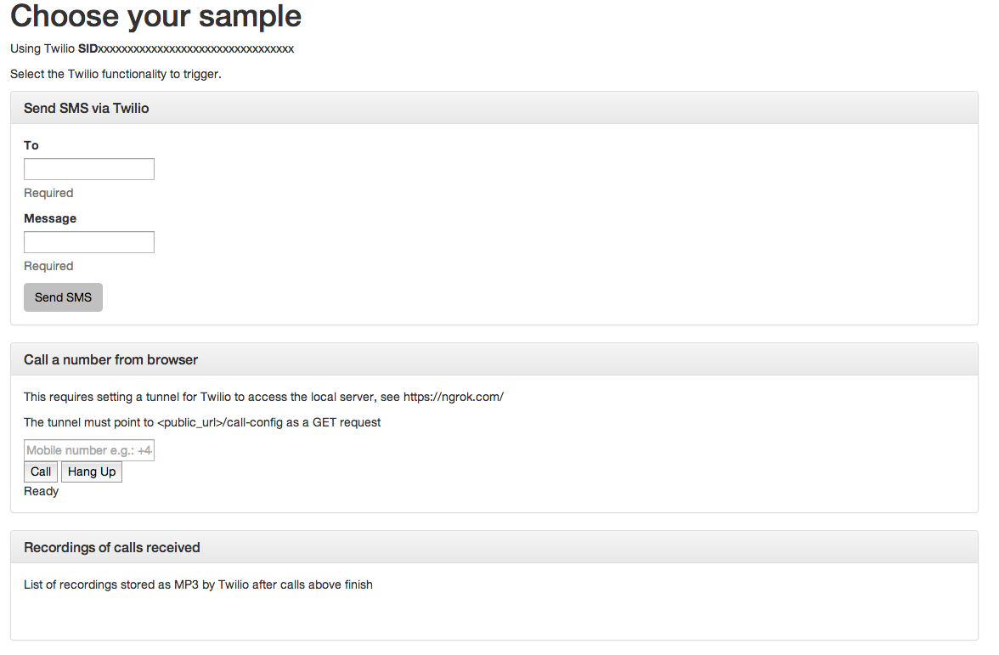
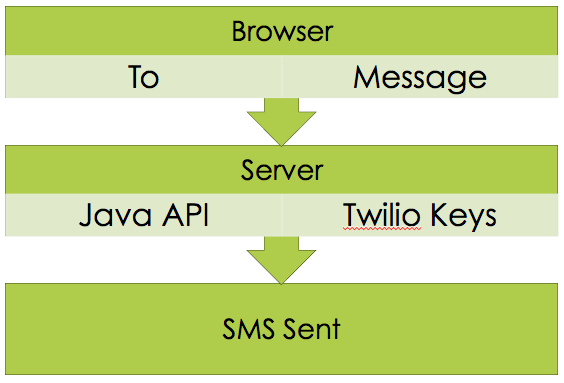
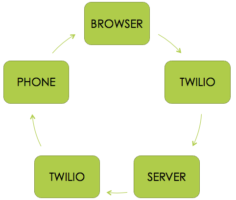
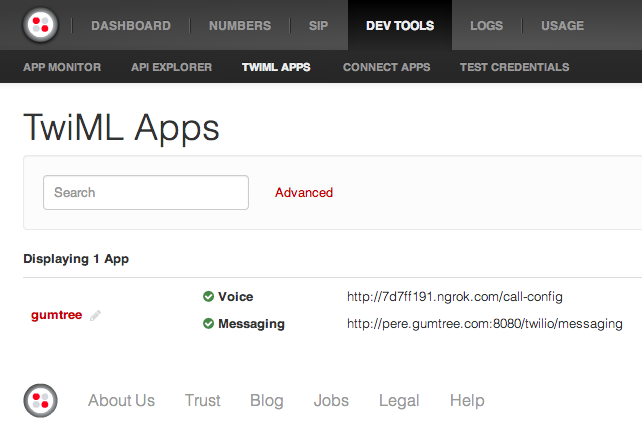
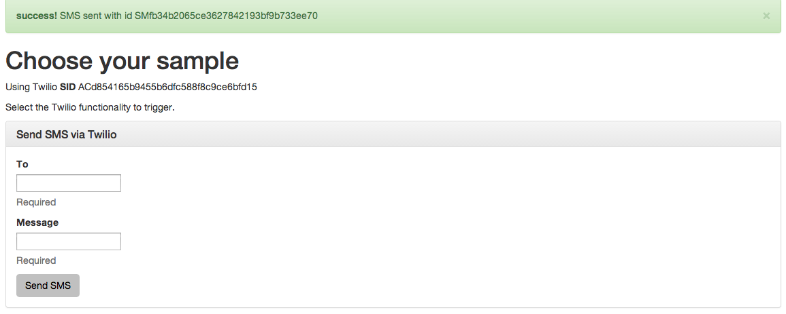

Using Twilio from within Play Framework
One of the advantages of working at Gumtree is being able to experiment. We are committed to deliver the best experience possible to our users, and evaluating both tools and processes that helps us to achieve that aim is a must. Not all of them will be used, but without evaluating something you can't form a valid opinion and see if it will fit your use cases. And you get to justify play time with new technologies as work ;)
I explain all this to make you a bit jealous (want to join us? We are hiring!). No, seriously, I explain this as you may be wondering why are we talking about Twilio in our blog. In fact, you may even be wondering what is Twilio. Let's start there.
Twilio? What's that?
Unfortunately that's a common question. Given the amount of SaaS appearing every month, it is easy to miss some interesting ones. This may be one of them, and it provides a quite interesting service.
Twilio is a SaaS that provides telephony services, from SMS to VoiceIP. Boring as it seems at first, with their API you can do things like adding 2-factor authentication via SMS to your application, sending SMS to a customers or calling a client from your browser, without requiring any additional plugin.
It is a really flexible service and it opens many interesting possibilities. It has SDK to use it from Android, iPhone or with many of the mainstream programming languages (Java, Javascript, Python, etc). To test it we created a small sample app using Play Framework and Scala, available in our Github repository. Please be aware that this is an internal test application, to try Twilio, and safety wasn't a concern when developing it. So be careful when reusing the code.
The application is a simple one. The main page asks for some Twilio API credentials, as seen below.

These credentials are stored in the user session and then the user is redirected to the test page. In the test page (shown below) the user can select one of several options:

Send a SMS to a number
Call a number from the browser
See a list of the calls done via the functionality above and retrieve an mp3 with the contents of the call
Going back to the main page will erase the credentials from the session, allowing the user to connect with a different set of credentials.
This provides a taste of what Twilio can do, and the app can be easily extended to add more sample cases for other Twilio functionality.
Hold your horses
Before we start playing with the code, we have to register an account with Twilio. I won't go through the steps in this post, as they are quite straightforward. When you create the account you can keep a development account or go for the full account (paid). A development account in Twilio allows you to test just a subset of the functionality. You will be able to send SMS and do some calls, but only to specific numbers. This can be a bit frustrating when working code is failing due to the limitations in development accounts. Given the low cost of the Twilio services, you may want to upgrade the account and pay the initial $20 of credit so you have full access to all the Twilio API for quite a long time (if only used for development).
Once you have created the account your dashboard shows both the SID and AUTH TOKEN you need to access some of the Twilio API and that the sample app requests in the main page (as seen in the previous section). There is another key required for some API calls, like calling from a browser, but before we enable that we have to talk a bit about the Twilio execution flow.
In our sample application we have 2 types of execution flow when calling Twilio API. The first one, when sending an SMS, is shown below.

In this scenario our server uses the API to send an SMS. The server feeds the API with the necessary keys and parameters, connects with Twilio servers and the SMS is sent. We may get back some information as a response from the call, but that is it. More importantly, the browser in here behaves as a transport layer, providing the relevant information (destination number and content of the message) to the server, which does the heavy lifting.
Sometimes the flow gets a bit more complicated. For example, let's say that we want to call to a phone from our browser. Thinking about it, one can guess that we have to connect the phone back to our browser, at the very least, which can imply additional steps. The Twilio flow in this scenario is as follows:

A bit more convoluted, isn't it? What is happening here is that Twilio is acting as a mediator to connect the browser and the phone. The browser connects to an app defined in the Twilio servers, which then asks our server how to act. The server replies telling Twilio to call to the provided phone number, and Twilio manages the connection between phone and server.
These extra steps, unnecessary as they may seem, are there to give extra flexibility and allow you to manage the call properly by rerouting and reacting as needed. To do this Twilio has the concept of TwiML apps, XML files using a specific set of tags which tell Twilio which action should happen at that moment. Below you can see a snapshot of the dashboard of Twilio showing our sample TwiML app:

You need to create one TwiML app for your project to be able to call from the browser. The application will provide a key, which is the last authentication key we need to run the sample application.
Creating the TwiML app brings us to Ngrok. When developing the sample app we got somehow confused by the flow and the calls where not going through. The eureka moment (obvious as it is) was when we realised that Twilio wanted to connect back to our development application to proceed, but the application was not available to the internet as it was running in localhost. Ngrok solves this issue by allowing you to expose applications running in your development machine to the world. If you look at the snapshot above you may notice that the url associated to the voice voice component of the application uses a ngrok url, that way the connection between TwiML app and our development server works. Be sure to do the same when creating your TwiML application.
Using Twilio inside Play Framework
At this stage we have all the tools we need to run the application. Let's see how did we build it. Remember that the code is available in our Github repository, some things like the contents of the routes file or the views won't be explained as they are trivial and can be seen in there.
The first step is to create a Play Framework application (version 2.2.1) and then include into it the Twilio Java library. There is a Scala library available, but it is not a Twilio official one, and past experiences showed us that we better rely on the officially supported libraries. Thanks to the seamless integration between Java and Scala, this is not an issue.
To do this edit build.sbt and add:
libraryDependencies ++= Seq(
cache,
"com.twilio.sdk" % "twilio-java-sdk" % "3.4.1"
)
Twilio and Credentials
As we have seen, Twilio uses 3 different keys to authorise API execution: SID, authentication token and application SID. We have created a model class to store these credentials:
case class TwilioCredentials (sid: String, token: String, appSID: String)
Our application forbids access to the test page if the credentials are not present in the session. This avoids issues when doing the calls, and ensures a predictable navigation flow. The way we achieve this is via a trait TwilioAccess that contains some helper methods to check if the keys are present in the user session, as seen below (some support code not shown to reduce clutter):
trait TwilioAccess {
private def onUnauthorized(request: RequestHeader) =
Results.Redirect(routes.Application.index)
.flashing("warning" -> "SID, App SID or Auth token missing in session")
def hasCredentials(f: => (String, String, String) => Request[AnyContent] => Result) =
credentialsPresent(onUnauthorized) {
(sid, token, appSID) =>
Action(request => f(sid, token, appSID)(request))
}
private def credentialsPresent[A](onUnauthorized: RequestHeader => SimpleResult)
(action: (String, String, String) => EssentialAction): EssentialAction = {
EssentialAction {
request =>
val mySid = sid(request)
val myToken = auth(request)
val myAppSID = appSID(request)
if (mySid.isEmpty || myToken.isEmpty || myAppSID.isEmpty)
Done(onUnauthorized(request), Input.Empty)
else
action(mySid.get, myToken.get, myAppSID.get)(request)
}
}
}
The relevant methods in the trait are:
credentialsPresent: this method gets an essential action and a method to execute if the user is not authorised. The code checks that the three keys are present in the session and if they are proceeds by executing the essential action, otherwise it runs the onUnauthorized method and prevents the user from accessing the page.
hasCredentials: uses the support method credentialsPresent to give or forbid access to a specific action
The fragment below shows how we use the trait to restrict user access:
object Application extends Controller with TwilioAccess {
def index = Action {
implicit request =>
Ok(views.html.index(credentialsForm)).withNewSession
}
def getCredentials = Action {
implicit request =>
credentialsForm.bindFromRequest.fold(
errors => BadRequest(views.html.index(errors)),
credentials => Redirect(routes.Application.testTwilio)
.withSession(setSessionCredentials(credentials.sid,
credentials.token, credentials.appSID))
)
}
def testTwilio = hasCredentials {
(sid, token, appSID) =>
implicit request =>
val callToken = TwilioAPI
.generateCallToken(sid, token, appSID) match {
case Failure(ex) =>
Logger.info(s"Couldn't generate the call token, error: ${ex.getMessage}");""
case Success(id) =>
Logger.info(s"Call token $id ready"); id
}
Ok(views.html.twilio(sid, smsForm, callToken, callsReceived))
}
}
The method index loads the main page and clears the session, removing any key stored in it. When we submit the form in the main page we hit getCredentials, which (if the form validates) stores the credentials in the session and redirects to the test page.
The method testTwilio manages the access to the test page. By using the support method hasCredentials from the included trait it ensures that if any of the credentials is missing the user won't be given access to the page. If the credentials are present, we execute some Twilio related code and then display the test page.
We have wrapped the access to Twilio API in an object TwilioAPI, shown below:
object TwilioAPI {
private val PHONE_FROM = "+441473379566"
def sendSMS(sid: String, token: String, to: String, msg: String) = Try {
Logger.info(s"Sending SMS to $to with text $msg")
val client = new TwilioRestClient(sid, token)
val params= Map(("Body", msg), ("To", to), ("From", PHONE_FROM))
val messageFactory: SmsFactory = client.getAccount.getSmsFactory
val message: Sms = messageFactory.create(params)
message.getSid
}
def generateCallToken(sid: String, token: String, appSID: String) =
Try {
Logger.info(s"Generating call token for app $appSID")
val capability = new TwilioCapability(sid, token)
capability.allowClientOutgoing(appSID)
capability.generateToken
}
}
The methods are quite self-explanatory, for example sendSMS gets some credential;s along a destination phone number and a message, and sends an SMS to that number using the API. It returns the unique id of the message as generated by the API, for future reference.
The other method, generateCallToken, given the credentials generates a unique token that will be used by our browser to establish a call from browser to phone. More details on the process will be given in following sections.
Sending a SMS
Sending an SMS, as we saw when talking about the Twilio flows, is very simple. We assume the user has provided valid credentials and filled the form in the test page, by giving a destination mobile number and a text message to send. From a code point of view this means validating the form and calling the API method shown above:
def sendSMS = hasCredentials {
(sid, token, appSID) =>
implicit request =>
smsForm.bindFromRequest.fold(
errors =>
BadRequest(views.html.twilio(sid, errors, "", callsReceived)),
details => {
val msg = TwilioAPI
.sendSMS(sid, token, details.phone, details.msg) match {
case Failure(ex) =>
Flash(Map("danger" -> s"Couldn't send sms, error: ${ex.getMessage}"))
case Success(id) =>
Flash(Map("success" -> s"SMS sent with id $id"))
}
Redirect(routes.Application.testTwilio).flashing(msg)
}
)
}
Once the message is sent we are sent back to the test page and we see a success message that includes the unique id of the message:

Call from your browser
Calling from the browser to a mobile phone is slightly more convoluted as we explained before. We need the following elements to be able to connect the call:
a call token that will be generated by the Twilio server and used by the browser to establish the call
javascript code to start and finish the call
a REST endpoint that generates a valid TwiML file to tell Twilio how to react to the call
another REST endpoint to store relevant information about the call
Let's see the code for each component in order. Generating a call token is very simple, we saw the support method that does this in the TwilioAPI object. As we need this token in the test page to be able to start the call, each time we load that page we generate a new token. This is not the way you may want to act in production, but it works for this test application:
val callToken = TwilioAPI
.generateCallToken(sid, token, appSID) match {
case Failure(ex) =>
Logger.info(s"Couldn't generate the call token, error: ${ex.getMessage}");""
case Success(id) =>
Logger.info(s"Call token $id ready");id
}
The token is rendered in the test page, along some javascript that links the call button with the Twilio javascript SDK. The code, with comments to explain what each element does, is shown next:
/* Create the Client with a Capability Token */
Twilio.Device.setup("@callToken", {debug: true});
/* Let us know when the client is ready. */
Twilio.Device.ready(function (device) {
$("#log").text("Ready");
});
/* Report any errors on the screen */
Twilio.Device.error(function (error) {
$("#log").text("Error: " + error.message);
});
/* Log a message when a call disconnects. */
Twilio.Device.disconnect(function (conn) {
$("#log").text("Call ended");
});
Twilio.Device.connect(function (conn) {
$("#log").text("Successfully established call");
});
/* Connect to Twilio when we call this function. */
function call() {
// get the phone number to connect the call to
params = {"To": $("#callTo").val()};
Twilio.Device.connect(params);
}
/* A function to end a connection to Twilio. */
function hangup() {
Twilio.Device.disconnectAll();
}
Pressing the call or hang up buttons triggers a call to the corresponding javascript methods, which start or end the call. The other methods provide logging and could be used to react to different error scenarios as desired. Please note that the params value we pass to Twilio.Device.connect can contain any custom parameter we want, and it will be forwarded to our server in the next step.
With this we have all the components we need to start the call, but we still need to indicate Twilio how to proceed after we it receives the call command. As you may remember, when creating the TwiML application you assigned a voice url, mapped via Ngrok to your local deployment. This call maps to a method in Application controller that returns a TwiML file with the action to execute.
def serveCallConfig = Action {
implicit request =>
Logger.info(s"Establishing a call form a browser")
Logger.debug(s"Request: ${request.queryString.toList}")
val to = request.queryString.get("To").getOrElse(mutable.Buffer()).mkString
Logger.info(s"Found target number $to")
val action = routes.Application.callDone.absoluteURL()
Logger.info(s"Action for recording is $action")
val xml = s"<Response><Dial callerId='+441473379566' method='GET' action='$action' record='true'><Number>$to</Number></Dial></Response>"
Ok(xml).as("text/xml")
}
Notice that in the method we only extract the value for the parameter to form the request, but we could get more values as mentioned above when showing the javascript code. The XML generated includes an action Dial to call a specific number (provided in the request). Once Twilio gets this document it will connect the browser with the number we provided in the XML file.
Note that the XML also adds an action, an optional (but recommended) parameter of the TwiML. This action is called by Twilio once the call ends, and it allows us to get information about the call, including the length and status, and a MP3 recording of the call. We can see the code that manages that request here:
def callDone = Action {
implicit request =>
Logger.info(s"A call from a browser has ended, storing details")
Logger.debug(s"Request: ${request.queryString.toList}")
val status = request.queryString.get("DialCallStatus").getOrElse(mutable.Buffer()).mkString
val sid = request.queryString.get("DialCallSid").getOrElse(mutable.Buffer()).mkString
val duration = request.queryString.get("DialCallDuration").getOrElse(mutable.Buffer()).mkString
val recording = request.queryString.get("RecordingUrl").getOrElse(mutable.Buffer()).mkString
Logger.info(s"Call $sid terminated with status $status after $duration. Recording available at $recording")
callsReceived = recording :: callsReceived
Ok
}
In the sample app we store all the call results in an in-memory array, but as you can see there is plenty of relevant information available about the call that may be of use in a production environment.
And, with this, the system is working. Ensure that Ngrok is running, the TwiML application is properly configured and launch the Play server. You will be able to call from your browser to your own mobile phone (or anyone's) and get a link to the MP3 recording of the call.
That's All Folks
And we are done. To summarise, we have seen how to use some Twilio services from within a Play Framework API, using Scala. This provides us with an extensible playground we can use to test and decide if the service fits the needs of our business. We have also talked about the Twilio flow and why we need to use Ngrok to expose our test environment to their systems.
The nice part is that without being experts, as this was our first time testing the Twilio API, we could create the prototype in a couple of hours (including pitfalls with ngrok). It took longer to write the post that to write the code. This shows that the API is mature and intuitive, and you can achieve quite a lot with minimal effort.
Another good thing about Twilio has been their customer support. We had a couple of requests and they were answered quickly, allowing us to test assumptions with a minimal delay. Any of you who has been testing a new API in a domain they are not experts knows sometimes it is easy to get stuck, and finding the solution (trivial as it may be) consumes a lot of time and energy. The fact we didn't have this pain with Twilio is something we, as developers, appreciate. It's not easy to build a good API :)
I hope it has been useful and, as always, feel free to comment and to fork the code for your own purposes.